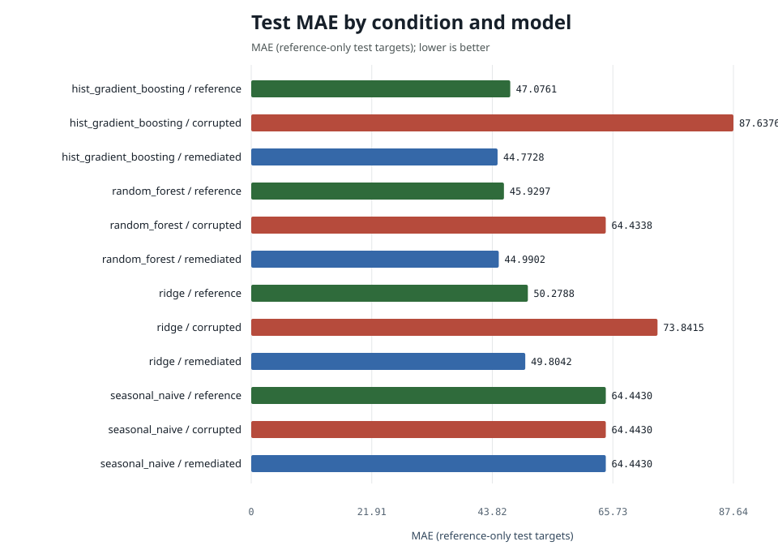
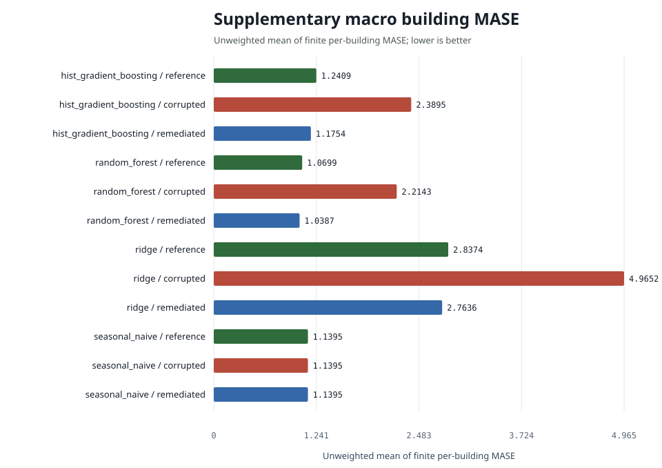

| condition | model | n | mae | rmse | wmape | mase | r2 | mae_ci_low | mae_ci_high | mase_macro_building | mase_buildings_evaluated | mase_buildings_undefined | training_rows | data_retained |
|---|---|---|---|---|---|---|---|---|---|---|---|---|---|---|
| corrupted | hist_gradient_boosting | 79178 | 87.6376 | 316.8519 | 0.2061 | 1.4148 | 0.7327 | 85.6603 | 89.5631 | 2.3895 | 12 | 0 | 105396 | 0.9999 |
| reference | hist_gradient_boosting | 79178 | 47.0761 | 133.6504 | 0.1107 | 0.7600 | 0.9524 | 46.1033 | 48.0075 | 1.2409 | 12 | 0 | 105400 | 0.9999 |
| remediated | hist_gradient_boosting | 79178 | 44.7728 | 127.0810 | 0.1053 | 0.7228 | 0.9570 | 43.9255 | 45.6024 | 1.1444 | 12 | 0 | 101957 | 0.9673 |
| corrupted | random_forest | 79178 | 64.4338 | 193.4664 | 0.1515 | 1.0402 | 0.9003 | 63.0968 | 65.6383 | 2.2143 | 12 | 0 | 105396 | 0.9999 |
| reference | random_forest | 79178 | 45.9297 | 134.0743 | 0.1080 | 0.7415 | 0.9521 | 45.0071 | 46.9097 | 1.0699 | 12 | 0 | 105400 | 0.9999 |
| remediated | random_forest | 79178 | 44.9902 | 130.8133 | 0.1058 | 0.7263 | 0.9544 | 44.1646 | 45.8592 | 1.0437 | 12 | 0 | 101957 | 0.9673 |
| corrupted | ridge | 79178 | 73.8415 | 147.8856 | 0.1736 | 1.1921 | 0.9418 | 72.9296 | 74.7281 | 4.9652 | 12 | 0 | 105396 | 0.9999 |
| reference | ridge | 79178 | 50.2788 | 127.0282 | 0.1182 | 0.8117 | 0.9570 | 49.4781 | 51.1080 | 2.8374 | 12 | 0 | 105400 | 0.9999 |
| remediated | ridge | 79178 | 49.8042 | 127.0960 | 0.1171 | 0.8040 | 0.9570 | 49.0105 | 50.6301 | 2.6604 | 12 | 0 | 101957 | 0.9673 |
| corrupted | seasonal_naive | 79178 | 64.4430 | 210.7660 | 0.1515 | 1.0404 | 0.8817 | 63.0987 | 65.8824 | 1.1395 | 12 | 0 | 105396 | 0.9999 |
| reference | seasonal_naive | 79178 | 64.4430 | 210.7660 | 0.1515 | 1.0404 | 0.8817 | 63.0987 | 65.8824 | 1.1395 | 12 | 0 | 105400 | 0.9999 |
| remediated | seasonal_naive | 79178 | 64.4430 | 210.7660 | 0.1515 | 1.0404 | 0.8817 | 63.0987 | 65.8824 | 1.1395 | 12 | 0 | 101957 | 0.9673 |
mase remains the canonical pooled MASE-168 primary metric.
mase_macro_building is supplementary and averages finite
building-specific MASE values whose denominators come only from reference
training history. Coverage is retained explicitly in the table and
building_mase.csv.


For hist_gradient_boosting, pooled MASE is 0.760 on reference training data, 1.415 on corrupted data (+86.2%) and 0.723 after remediation (-48.9% versus corrupted); remediation recovered essentially all of the corruption penalty while keeping 96.7% of the reference training targets. Against the seasonal-naive baseline (MASE 1.040) the reference model is +26.9% better. The paired remediated-minus-corrupted MAE difference is -42.86 (95% interval -44.84 to -40.95; negative favors remediation).
For random_forest, pooled MASE is 0.741 on reference training data, 1.040 on corrupted data (+40.3%) and 0.726 after remediation (-30.2% versus corrupted); remediation recovered essentially all of the corruption penalty while keeping 96.7% of the reference training targets. Against the seasonal-naive baseline (MASE 1.040) the reference model is +28.7% better. The paired remediated-minus-corrupted MAE difference is -19.44 (95% interval -20.45 to -18.34; negative favors remediation).
For ridge, pooled MASE is 0.812 on reference training data, 1.192 on corrupted data (+46.9%) and 0.804 after remediation (-32.6% versus corrupted); remediation recovered essentially all of the corruption penalty while keeping 96.7% of the reference training targets. Against the seasonal-naive baseline (MASE 1.040) the reference model is +22.0% better. The paired remediated-minus-corrupted MAE difference is -24.04 (95% interval -24.51 to -23.61; negative favors remediation).
The signed difference is remediated absolute error minus corrupted absolute error on identical test keys. Negative values favor remediation.
| model | n | corrupted_mae | remediated_mae | mean_difference | difference_ci_low | difference_ci_high |
|---|---|---|---|---|---|---|
| hist_gradient_boosting | 79178 | 87.6376 | 44.7728 | -42.8648 | -44.8396 | -40.9544 |
| random_forest | 79178 | 64.4338 | 44.9902 | -19.4436 | -20.4504 | -18.3440 |
| ridge | 79178 | 73.8415 | 49.8042 | -24.0373 | -24.5103 | -23.6083 |
| seasonal_naive | 79178 | 64.4430 | 64.4430 | 0.0000 | 0.0000 | 0.0000 |
Subgroup results cover site, primary use, building, and calendar quarter. They are robustness slices, not a fairness assessment.
The table includes every configured condition and model. Lower error is better. Causal interpretation is limited to the documented seeded fault suite and deterministic remediation. Natural source-data comparisons remain observational.